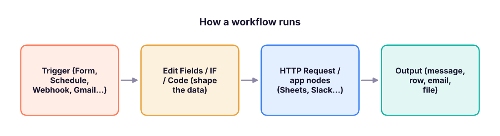
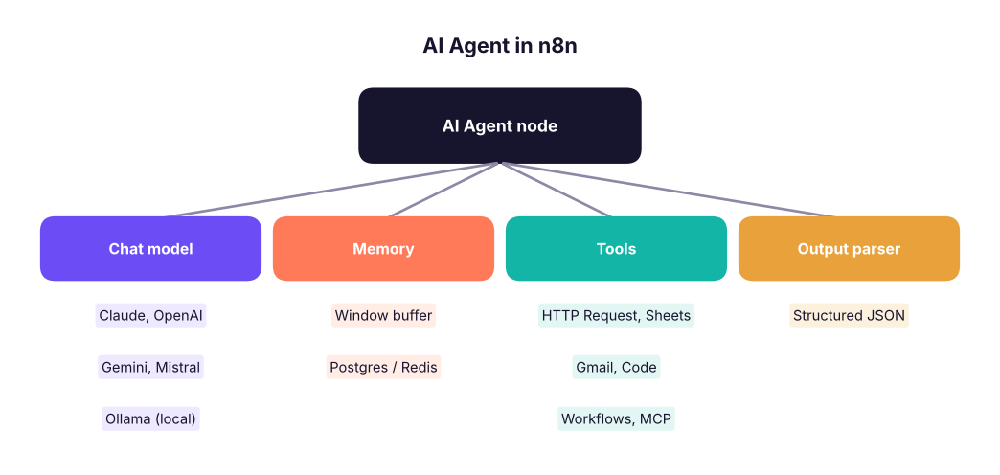

n8n Complete Tutorial: Workflow Automation, Data Pipelines and AI Agents
Learn n8n, the open, self-hostable workflow-automation tool. Set it up on n8n Cloud or Docker, understand triggers, nodes, credentials, items and expressions, transform data with Edit Fields, IF, Switch, Merge, Loop and Code nodes, call any API with HTTP Request, handle errors and schedules, build AI agents with chat models, memory, tools and vector stores, and connect n8n to MCP. Four complete projects: lead capture, a daily sales report, an email-triage AI agent and a document Q&A bot.
- Install or sign up for n8n and build, test and activate a workflow
- Explain triggers, nodes, items and expressions, and transform data between apps
- Call REST APIs with HTTP Request and write JavaScript or Python in the Code node
- Add error handling, retries, schedules and webhooks for reliable automations
- Build AI-agent workflows with chat models, memory, tools, vector stores and MCP
What n8n is
n8n ("n-eight-n", from nodemation) connects apps and data with visual workflows. Each workflow starts with a trigger (a form is submitted, a schedule fires, a webhook is called) and passes data through nodes that read, transform and send it. Compared with Zapier and Make, n8n can be self-hosted (your data stays on your server), lets you write code in any step, and has strong AI-agent nodes.
| Zapier | Make | n8n | |
|---|---|---|---|
| Hosting | Cloud only | Cloud only | Cloud or self-hosted (Docker, npm) |
| Pricing unit | Tasks (each step) | Operations | Workflow executions (cloud); free to self-host under its fair-code licence |
| Code | Code steps (limited) | Limited | Full JavaScript/Python Code node, npm packages when self-hosted |
| Best for | Quick app-to-app zaps | Visual scenarios with routers | Data pipelines, AI agents, privacy-sensitive automations |
Getting n8n
| Option | How |
|---|---|
| n8n Cloud | Sign up at n8n.io → free trial → you get yourname.app.n8n.cloud |
| Docker (recommended self-host) | docker volume create n8n_data then docker run -it --rm -p 5678:5678 -v n8n_data:/home/node/.n8n docker.n8n.io/n8nio/n8n and open http://localhost:5678 |
| npm (quick local test) | npx n8n (needs Node.js) |
| Production self-host | Docker Compose with PostgreSQL, a domain with HTTPS (Caddy/Nginx), N8N_ENCRYPTION_KEY set and backed up, queue mode with Redis for scale |
The editor and the core ideas

| Concept | Meaning |
|---|---|
| Workflow | The canvas of connected nodes; Active workflows run on their trigger |
| Trigger node | Starts the run: Manual, Schedule, Webhook, n8n Form, Chat, app triggers (Gmail, Google Sheets, Typeform, Stripe…) |
| Node | One step: an app action, a core utility, or an AI node |
| Credentials | Saved, encrypted logins/API keys (OAuth for Google, Slack, etc.), reused by nodes |
| Items | Data flows as a list of JSON items; most nodes run once per item |
| Expressions | {{ $json.email }}, {{ $now.toFormat('yyyy-MM-dd') }}, {{ $('Form').item.json.name }} to use data from earlier nodes |
| Executions | History of every run with the input/output of each node, for debugging and re-running |
Items: the most important idea
Every node receives and outputs an array of items, each { "json": { … } }. If a Google Sheets node returns 25 rows, the next Slack node runs 25 times, once per item, unless you aggregate first.
import json
items = [{"json": {"name": "Asha", "email": "asha@example.com", "city": "Pune", "score": 82}},
{"json": {"name": "Ravi", "email": "ravi@example.com", "city": "Delhi", "score": 45}},
{"json": {"name": "Meera", "email": "meera@example.com", "city": "Pune", "score": 91}}]
# IF node: score >= 60 goes to the "true" branch
true_branch = [i for i in items if i["json"]["score"] >= 60]
# Edit Fields (Set) node: keep and add fields
shaped = [{"json": {"lead": i["json"]["name"], "email": i["json"]["email"], "priority": "hot" if i["json"]["score"] >= 90 else "warm"}} for i in true_branch]
# Aggregate node: many items -> one item with a list
aggregated = {"json": {"leads": [s["json"]["lead"] for s in shaped], "count": len(shaped)}}
print(json.dumps(shaped, indent=1)); print(aggregated)[
{
"json": {
"lead": "Asha",
"email": "asha@example.com",
"priority": "warm"
}
},
{
"json": {
"lead": "Meera",
"email": "meera@example.com",
"priority": "hot"
}
}
]
{'json': {'leads': ['Asha', 'Meera'], 'count': 2}}Core nodes you will use every day
| Node | Use |
|---|---|
| Edit Fields (Set) | Rename, add, remove or compute fields |
| IF / Switch | Route items by conditions (two branches / many branches) |
| Merge | Combine two inputs: append, match by a field (like a join), or by position |
| Filter | Drop items that do not match |
| Split Out | Turn a list inside one item into separate items |
| Aggregate / Summarize | Many items → one (list, sum, count, group by) |
| Loop Over Items (Split in Batches) | Process items in batches (APIs with rate limits) |
| Wait | Pause for a time or until a webhook/form resumes the run |
| HTTP Request | Call any REST API (GET/POST, headers, auth, pagination); import a cURL command |
| Code | JavaScript or Python over all items or each item |
| Date & Time, Crypto, XML/HTML, Extract From File, Convert to File | Utilities |
| Execute Workflow / Execute Workflow Trigger | Call one workflow from another (sub-workflows, reusable steps) |
| Respond to Webhook | Return a custom HTTP response (build simple APIs) |
Code node example (JavaScript, "Run once for all items")
// Clean phone numbers and drop duplicates by email
const seen = new Set();
return $input.all()
.filter(item => { const e = item.json.email.toLowerCase().trim(); if (seen.has(e)) return false; seen.add(e); return true; })
.map(item => ({ json: { ...item.json, phone: String(item.json.phone || '').replace(/\D/g, '').slice(-10) } }));The Python version of the same idea (Code node → Language: Python) uses _input.all() and returns a list of dicts with a json key.
HTTP Request: calling an API
# What an HTTP Request node sends and how you map the answer back into items
request = {"method": "GET", "url": "https://api.example.com/v1/orders", "qs": {"status": "paid", "limit": 2},
"headers": {"Authorization": "Bearer {{ $credentials.apiKey }}"}}
response = {"data": [{"id": 101, "amount": 2499, "city": "Pune"}, {"id": 102, "amount": 899, "city": "Delhi"}], "next": None}
items = [{"json": o} for o in response["data"]] # Split Out on "data"
print(request["method"], request["url"], request["qs"]); print(items)GET https://api.example.com/v1/orders {'status': 'paid', 'limit': 2}
[{'json': {'id': 101, 'amount': 2499, 'city': 'Pune'}}, {'json': {'id': 102, 'amount': 899, 'city': 'Delhi'}}]Tips: use Authentication → Predefined credential type when n8n has the app, otherwise Generic credential (header auth, OAuth2); turn on Pagination for APIs with next links; add Retry on fail (Settings) for flaky APIs.
Reliability: errors, retries and scheduling
- Settings per node: Retry on fail (tries and wait), Continue on fail / error output branch, Always output data.
- Error workflow: Workflow settings → Error workflow → pick a workflow that starts with Error Trigger and sends you a Slack/WhatsApp/email alert with the failed node and message.
- Schedule Trigger: every X minutes, daily at 09:00 IST (set the workflow time zone to Asia/Kolkata), or a cron expression
0 9 * * 1-5. - Pin data while building: freeze a node's output so you do not call the API on every test.
- Environment safety: keep secrets in credentials, never in Code nodes; restrict who can edit workflows; use separate dev and prod instances for important flows.
AI agents in n8n
The AI Agent node runs a loop: a chat model reads the goal, decides which tool to call, reads the result and continues until it can answer.

Other AI building blocks: Basic LLM Chain, Text Classifier, Information Extractor (pull fields from emails or PDFs into JSON), Summarization Chain, Sentiment Analysis, Embeddings + Vector Store nodes (Pinecone, Qdrant, Supabase, PGVector, in-memory) for RAG, and the Chat Trigger for a hosted chat window.
n8n and MCP
- MCP Client Tool: lets an n8n agent use tools from any MCP server.
- MCP Server Trigger: exposes your n8n workflows as MCP tools, so Claude or other MCP clients can call them (for example "create a lead in our CRM").
Four complete projects
1. Lead capture to Google Sheets and Slack
n8n Form Trigger (name, email, phone, course) → Edit Fields (clean phone, add timestamp) → Google Sheets: Append row → IF course = "Data Engineer" → Slack: send message to #sales (true) / Gmail: send brochure (false).
2. Daily sales report
Schedule Trigger 09:00 IST → Postgres/HTTP Request: yesterday's orders → Summarize: sum sales by region → Code: build an HTML table → Gmail: send to managers + Slack summary.
import pandas as pd
orders = pd.DataFrame({"region": ["South", "West", "South", "North", "East", "West"], "amount": [24990, 8999, 15500, 4300, 12000, 30500]})
summary = orders.groupby("region").amount.agg(["count", "sum"]).sort_values("sum", ascending=False)
html = summary.to_html() # the Code node builds the same table for the email body
print(summary); print("HTML length for the email:", len(html), "characters")count sum region South 2 40490 West 2 39499 East 1 12000 North 1 4300 HTML length for the email: 571 characters
3. Email triage AI agent
Gmail Trigger (new email) → Text Classifier (Sales lead / Support / Invoice / Spam) → Switch → Sales: Information Extractor (name, company, budget) → HubSpot/Sheets + Slack ping; Support: AI Agent drafts a reply using a Vector Store tool over your FAQ and saves it as a Gmail draft for a human to send; Spam: archive.
4. Document Q&A bot (RAG)
Indexing workflow: Google Drive Trigger (new PDF) → Default Data Loader + Recursive Text Splitter → Embeddings → Vector Store: insert. Chat workflow: Chat Trigger → AI Agent with the vector store as a tool, a chat model and window memory → answer with sources. This is the RAG pattern from the GenAI track, built without code.
Summary
- Workflows = trigger + nodes; data moves as a list of JSON items and most nodes run once per item.
- Expressions pull values from earlier nodes; Code and HTTP Request cover anything without a ready node.
- Reliability comes from retries, error branches, an error workflow, schedules with the right time zone and pinned test data.
- The AI Agent node combines a chat model, memory and tools; vector stores add RAG; MCP connects n8n to other AI tools both ways.
1. A Google Sheets node returns 30 rows and a Slack node follows. What happens?
2. Which expression reads the email field of the current item?
3. Which node calls any REST API that has no ready-made n8n node?
4. How do you get alerted when a production workflow fails?
5. What is the main reason teams self-host n8n?
6. Which sub-nodes plug into an AI Agent node?
Build project 1 (form → Sheets → Slack/Gmail) and add an error workflow that messages you on failure. Then extend it: use an Information Extractor to pull "experience in years" from a free-text field and route experienced leads to a different Slack channel.
Show solution
Form Trigger fields: name, email, phone, course, about_you. Edit Fields: phone = {{ $json.phone.replace(/\D/g, '').slice(-10) }}, received = {{ $now.toISO() }}. Information Extractor schema { "experience_years": number } from about_you, then IF experience_years ≥ 3 → #senior-leads else #leads. Workflow settings → Error workflow → a workflow with Error Trigger → Slack "Workflow {{ $json.workflow.name }} failed at {{ $json.execution.lastNodeExecuted }}".
Q: n8n vs Zapier vs Make? Zapier is the simplest for app-to-app automations; Make adds visual branching and data mapping; n8n adds self-hosting, full code steps, sub-workflows and strong AI-agent features, which suits data and AI teams.
Q: How do you make an automation reliable? Retries with backoff, error branches and an error workflow with alerts, idempotent steps (check before creating), rate-limit batching, logging executions, separate test and production, and secrets in credentials.
Q: How would you build a support bot on company documents in n8n? An indexing workflow that loads documents, splits them, embeds them and stores them in a vector store; a chat workflow with Chat Trigger, an AI Agent with a chat model, memory and the vector store as a retrieval tool, with sources in answers and a human-handover path.
Learn more (official and free)
Practise more online
Free, trusted places to test yourself on this topic. Links open the original site in a new tab.